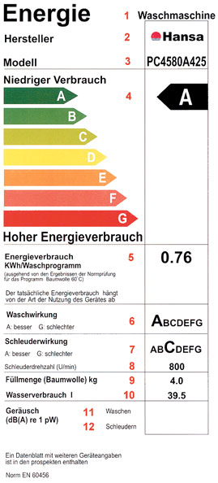

Классы энергопотребления некоторых видов бытовой техники


В последней четверти ХХ в. потребители бытовой техники стали уделять внимание не только внешнему виду и набору функций приобретаемого изделия, но и задумываться над тем, сколько им придется платить за электроэнергию, которую это изделие расходует.Для унификации этой маркировки в
Что же касается,
например, стиральных машин, то машинка с трехкилограммовой загрузкой
будет потреблять 600-700 ватт. Эти данные рассчитываются на полную
машину при 60 градусах стирки. Стиральные машины, рассчитанные на
большее количество белья —
Большее по сравнению
со стиральными машинами электроэнергии — 1,5-2 кВт — потребляют
бойлеры. Следует принимать в расчет и объем воды, который бойлер будет
подогревать. Тэны в бойлерах одинаковые. Если тэн, расходующий полтора
киловатта электроэнергии в час, будет нагревать
Современные
кондиционеры потребляют в районе киловатта, от 0,8 до 1,2 — в
зависимости от режима, в котором работает техника — охлаждение или
обогрев. В последнее время появились модели кондиционеров, потребляющие
0,6-0,7 кВт. Так что кондиционеры являются чемпионами среди бытовой техники в области энергосбережения.
А вот при выборе мелкой бытовой техники —
фенов, миксеров, блендеров, утюгов, пылесосов — покупатели, наоборот,
всегда хотят более мощную технику. Разве что чайники являются
исключением. При выборе стиральных машин, кондиционеров и бойлеров
энергопотребление имеет значение еще и потому, что нужно провести к ним
электропроводку соответствующей толщины. А если одновременно в квартире
работает большое количество мощных электроприборов, нагрузка на сеть
будет чрезмерной.
Затем рачительные
европейцы ввели класс энергопотребления электрических приборов А+ и А++.
Сделано это было добровольным соглашением 12 ведущих европейских
производителей бытовой техники от 31.10.2002 г. Фирмами,
подписавшими это соглашение по эгидой CECED (Европейского комитета
производителей бытовой техники ), стали Arcelik (Турция), Antonio
Merloni (Италия), Bosch Siemens (Германия), Candy (Италия), Elco-Brandt
(Франция), Electrolux (Швеция), Fagor (Испания), Gorenje (Словения),
Merloni Elettrodomestici (Италия), Miele (Германия), SMEG (Италия) и
Whirlpool Europe (Италия).
Рассчитывают класс
следующим образом. По очень сложной формуле вычисляют нормативное
энергопотребление для прибора, а затем в процентах получают отношение
реального энергопотребления к нормативному. Так у холодильников класса А++ — это соотношение меньше 30 %, класса А — 55 %, D — 100 %.
Стремясь сделать
свою продукцию конкурентной, не только страны Евросоюза, но и страны
постсоветского пространства стали отдавать предпочтение экономичной бытовой технике. С 1 ноября 2008 года ограничен доступ на белорусский рынок неэкономичных бытовых электроприборов, класс которых
ниже С. В России существует государственный стандарт, на основании
которого изготовитель изделия обеспечивает включение в нормативную и
техническую документацию на каждый вид энергопотребляющего изделия бытового и
коммунального назначения полных сведений о показателях
энергоэффективности изделия и информационного листка
энергоэффективности.
Что же касается
Молдовы, то требования к энергосбережению есть и у нас. Требования эти
соответствуют европейской практике, и классы энергопотребления те же
самые. Потребитель имеет право требовать у продавца документ,
подтверждающий информации о том, к какому классу энергосбережения относится техника . Если же такой информации нет, то технику лучше не приобретать.
Насторожить должно и
отсутствие этикетки на самом товаре, рассказывающей о том, к какому
классу принадлежит стиральная машина или холодильник.
Подготовила О. Савченко
Расшифровка РИСУНКА:
Энергетическая наклейка стиральной машины:
1 — тип изделия (стиральная машина);
2 — изготовитель или торговая марка;
3 — модель;
4 — класс энергопотребления от А до G;
5
— расход электроэнергии (за цикл стирки хлопковой ткани при 600С), кВт
ч. Здесь же указывается, что фактический расход энергии зависит от
условий эксплуатации изделия;
6 — класс эффективности стирки от А до G;
7 — класс эффективности отжима от А до G;
8 — максимальная скорость вращения барабана при отжиме, об./мин;
9 — номинальная загрузка барабана бельем (хлопок), кг;
10 — потребление воды за цикл стирки, л;
11 — уровень шума при стирке, дБ(А);
12 — уровень шума при отжиме, дБ(А).
Последние
две строки являются факультативными, и их заполнение требуется только
для очень шумных изделий, что в наше время редкость.